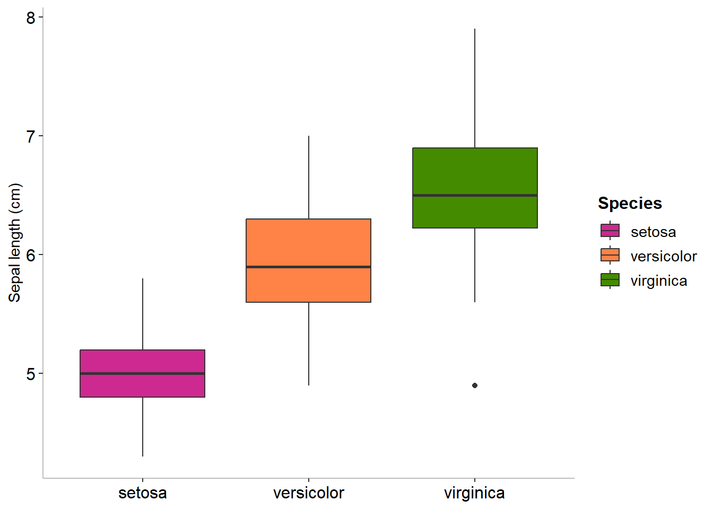
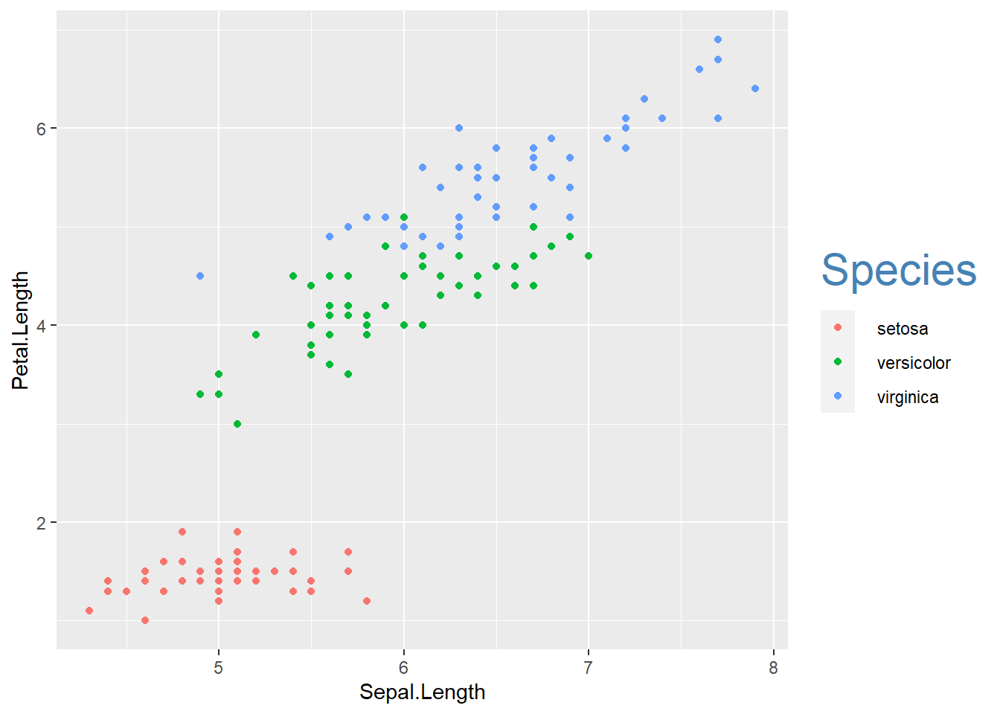
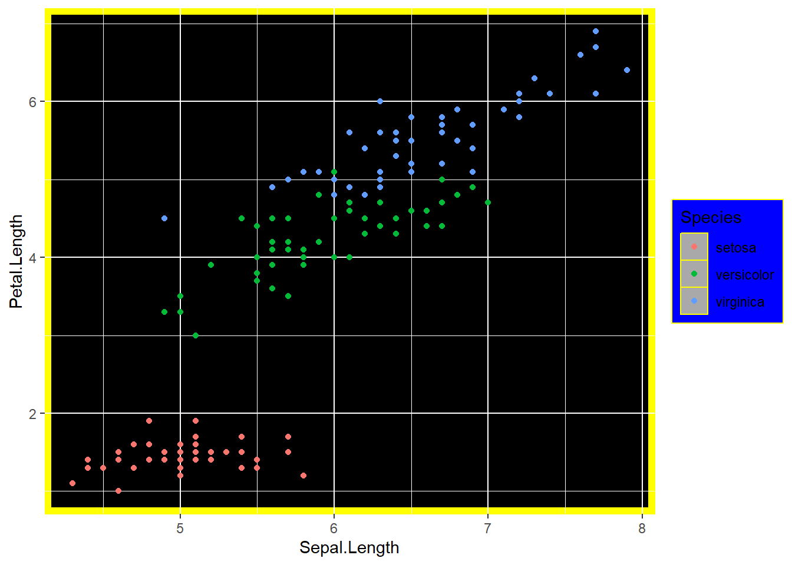
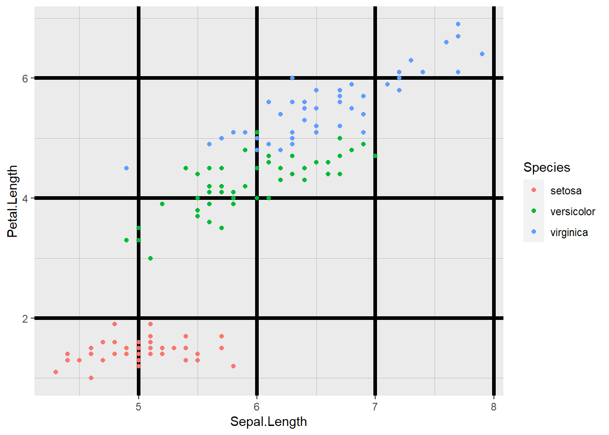
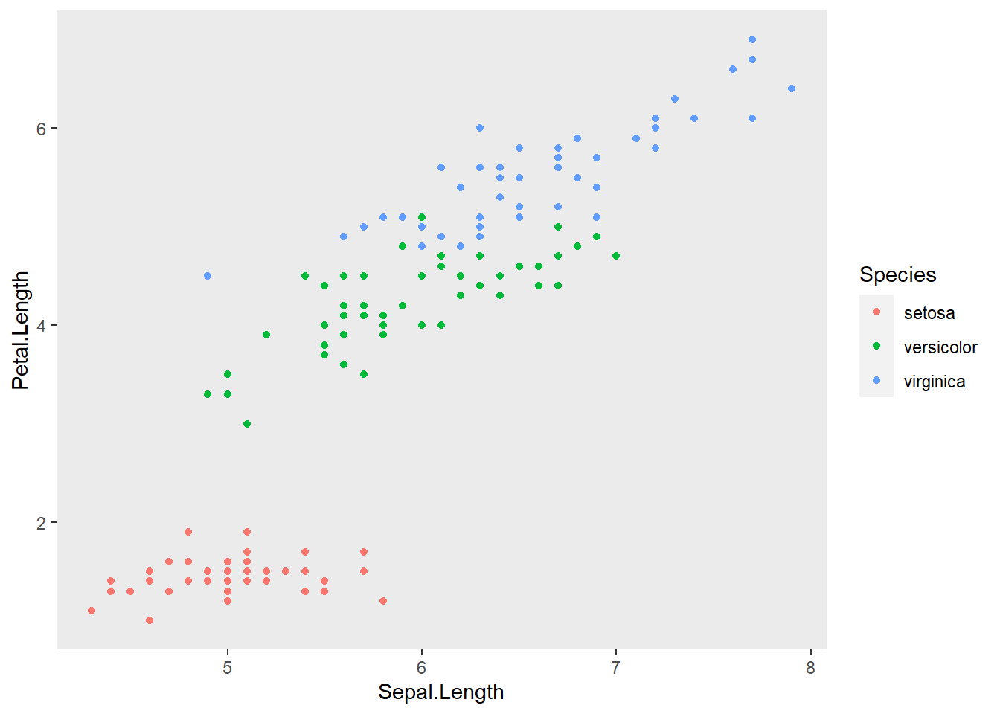
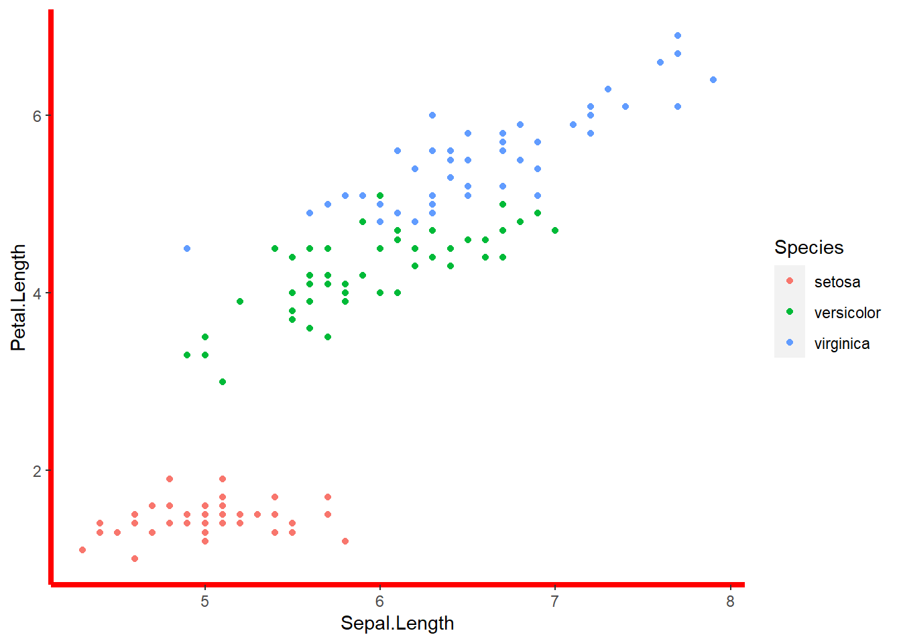
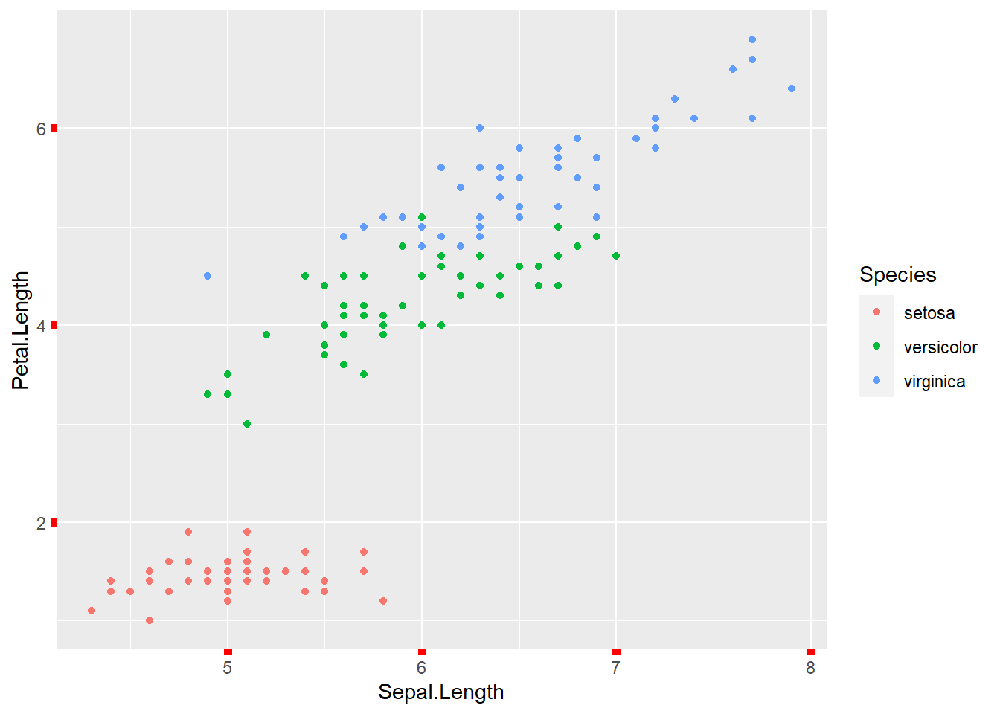
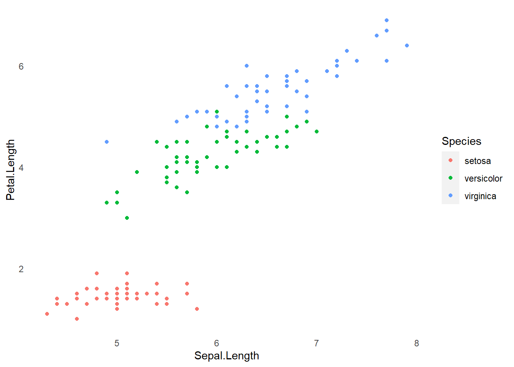
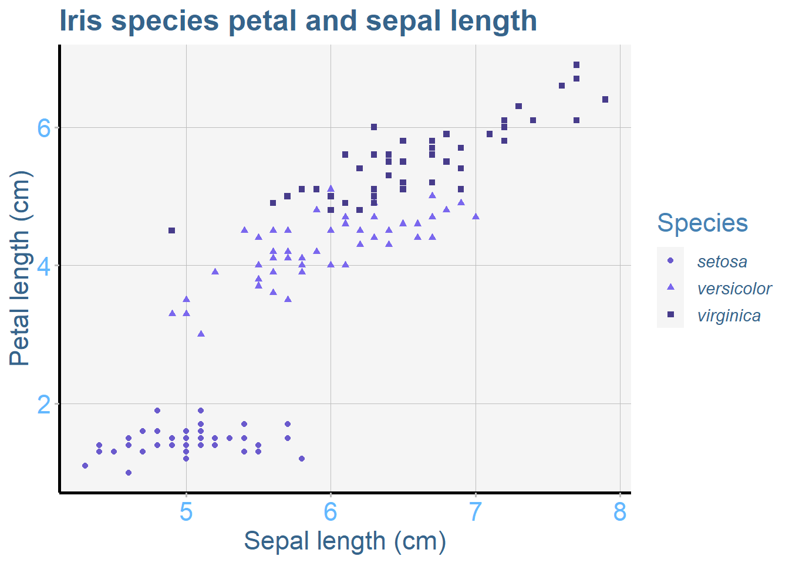

Personalización de un gráfico en ggplot
Los resultados de ggplot son casi completamente personalizables. Esto brinda al usuario la libertad de crear un diseño de gráfico que se ajuste perfectamente a los requerimientos para informes, ensayos o artículos.
De forma general se puede editar las caracteristicas, modificando el estilo, las líneas de cuadrícula, marcas de los ejes, color del panel, color de la leyenda o contornos.
Antes de comenzar, lee la página sobre Conceptos básicos para la construcción de gráficos con ggplot e instala el paquete ggplot2.
library(ggplot2)Personalización de un grafico ggplot2
Una de las formas más efectivas de personalizar un gráfico es crear un tema personalizado y separarlo del código básico de ggplot. Al separar y guardar el tema personalizado, será mucho más fácil editarlo, modificarlo y reutilizarlo para otros proyectos.
En estos ejemplos, vamos a utilizar un conjunto de datos disponibles en R, el cual incluye la longitud y el ancho de partes florales para tres especies de iris. Primero, carga el conjunto de datos:
data(iris)El siguiente código genera un gráfico de dispersión de la longitud del pétalo vs longitud del sépalo, con las tres especies codificadas por color. Esta es la base que utilizaremos en todo este tutorial.
IrisPlot <- ggplot2::ggplot(iris,
ggplot2::aes(Sepal.Length, Petal.Length,
colour = Species)) +
ggplot2::geom_point()
Para cambiar el diseño de un elemento en un gráfico: por ejemplo, el código para cambiar el color y el tamaño de la leyenda en el gráfico anterior se vería así:
mytheme <-
theme(legend.title = element_text(colour = "steelblue", size = rel(2)))Luego volveríamos a imprimir el gráfico base con este tema agregado:
print(IrisPlot + mytheme)
Los temas pueden tener muchos elementos diferentes relacionados con leyendas, ejes, títulos, etc. Separa cada elemento dentro del código theme con una coma.
Fondo del gráfico y de la leyenda
El fondo del gráfico y de la leyenda se puede cambiar a cualquier color de los enumerados aquí utilizando el siguiente código:
panel.background = element_rect()modificará del panel detrás del gráfico.legend.key = element_rect()modificará las cajas junto a cada nombre de categoría.legend.background = element_rect()modificará la caja alrededor de los nombres y cajas de la leyenda.
Para cada uno de estos elementos, los formatos que puedes modificar son:
fill = "color"para modificar el dolor del panel detrás del gráfico.colour = "color"modificará el color del contorno de los ejes del gráfico.size = 6modificará el grosor de las lineas de contorno.
Para demostrar cómo funciona, aquí hay un tema con los colores elegidos para mostrar las diferencias:
mytheme <-
theme(
panel.background = element_rect(
fill = "black",
colour = "yellow",
size = 4
),
legend.key = element_rect(fill = "darkgrey", colour = "yellow"),
legend.background = (element_rect(colour = "yellow", fill = "blue"))
)Warning: The `size` argument of `element_rect()` is deprecated as of ggplot2 3.4.0.
ℹ Please use the `linewidth` argument instead.print(IrisPlot + mytheme)
Tamaño, color o presencia de las líneas de la cuadrícula
Las líneas de cuadrícula se dividen en dos conjuntos: las líneas de cuadrícula mayores y menores. Esto te permite acentuar o eliminar la mitad de las líneas de cuadrícula.
panel.grid.major = element_line()- modifica el formato de las líneas de cuadrícula mayores.panel.grid.minor = element_line()- modifica el formato de las líneas de cuadrícula menores.
donde element_line() se usa para especificar el color y el grosor de las líneas.
Los formatos incluyen:
*Color: Por ejemplo, colour = "steelblue2" - recuerda incluir “” antes y después del nombre del color.
Tamaño: Se especifica ingresando un número, por ejemplo,size = 3.
Al combinar todo esto en un tema, se vería así:
mytheme <-
theme(
panel.grid.major = element_line(colour = "black", size = (1.5)),
panel.grid.minor = element_line(
size = (0.2), colour =
"grey"
)
)
print(IrisPlot + mytheme)
Para remover las líneas de cuadrícula, puedes usar element_blank()
mytheme <- theme(panel.grid.minor = element_blank(), panel.grid.major = element_blank())
print(IrisPlot + mytheme)
Líneas de los ejes x e y
El tamaño y el color de las líneas de los ejes se pueden personalizar de la misma manera que las líneas de la cuadrícula (arriba), utilizando axis.line = element_line(). Por ejemplo:
mytheme <-
theme(
axis.line = element_line(size = 1.5, colour = "red"),
panel.background = element_rect(fill = "white")
)
print(IrisPlot + mytheme)
Marcas de los ejes
El tamaño y el color de las marcas de los ejes se pueden modificar utilizando axis.ticks = element_line( ). Por ejemplo:
mytheme <- theme(axis.ticks = element_line(colour = "red", size = (2)))
print(IrisPlot + mytheme)
Eliminación de cualquier elemento de un tema
Se utiliza la función = element_blank() si deseas eliminar completamente un elemento del tema seleccionado. Por ejemplo, para eliminar las marcas, las líneas de la cuadrícula y el fondo, utilizarías:
mytheme <-
theme(
axis.ticks = element_blank(),
panel.grid.minor = element_blank(),
panel.grid.major = element_blank(),
panel.background = element_blank()
)
print(IrisPlot + mytheme)
Ejemplo de gráfico completamente personalizado
Aquí tienes un ejemplo de un gráfico generado con ggplot2 con muchos elementos personalizados. Obviamente, es mucho código, pero recuerda que puedes guardar y reutilizar tu tema favorito tantas veces como quieras. Consulta la página sobre Agregar títulos y nombres de ejes para obtener ayuda con esas partes del código print().
IrisPlot <-
ggplot(
iris,
aes(
Sepal.Length,
Petal.Length,
colour = Species,
shape = Species
)
) +
geom_point()
mytheme3 <-
theme(
legend.text = element_text(
face = "italic",
colour = "steelblue4",
family = "Helvetica",
size = rel(1)
),
axis.title = element_text(
colour = "steelblue4",
family = "Helvetica",
size = rel(1.5)
),
axis.text = element_text(
family = "Helvetica",
colour = "steelblue1",
size = rel(1.5)
),
axis.line = element_line(size = 1, colour = "black"),
axis.ticks = element_line(colour = "grey", size = rel(1.4)),
panel.grid.major = element_line(colour = "grey", size = rel(0.5)),
panel.grid.minor = element_blank(),
panel.background = element_rect(fill = "whitesmoke"),
legend.key = element_rect(fill = "whitesmoke"),
legend.title = element_text(
colour = "steelblue",
size = rel(1.5),
family = "Helvetica"
),
plot.title = element_text(
colour = "steelblue4",
face = "bold",
size = rel(1.7),
family = "Helvetica"
)
)
print(
IrisPlot + mytheme3 + ggtitle("Iris species petal and sepal length")
+ labs(y = "Petal length (cm)", x = "Sepal length (cm)", colour = "Species")
+ scale_colour_manual(values = c("slateblue", "slateblue2", "slateblue4"))
)
Más ayuda
Para personalizar aún más la estética de un gráfico, incluyendo el color y el formato, consulta nuestras otras páginas de ayuda de ggplot:
Puedes encontrar ayuda sobre todas las funciones de ggplot en el sitio web de ggplot.
Puedes descargar una hoja de referencia útil sobre las funciones más utilizadas aquí.
Chang, W (2012) R Graphics cookbook. O’Reilly Media. - una guía sobre ggplot con bastante ayuda en línea aquí
Autor: Fiona Robinson
Año: 2016
Última actualización: Nov. 2023